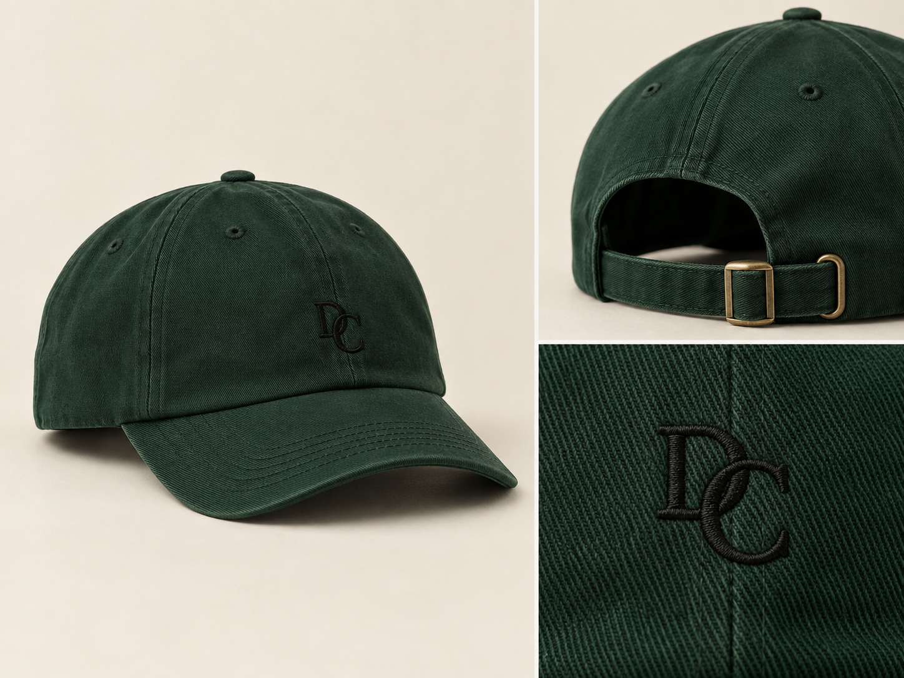
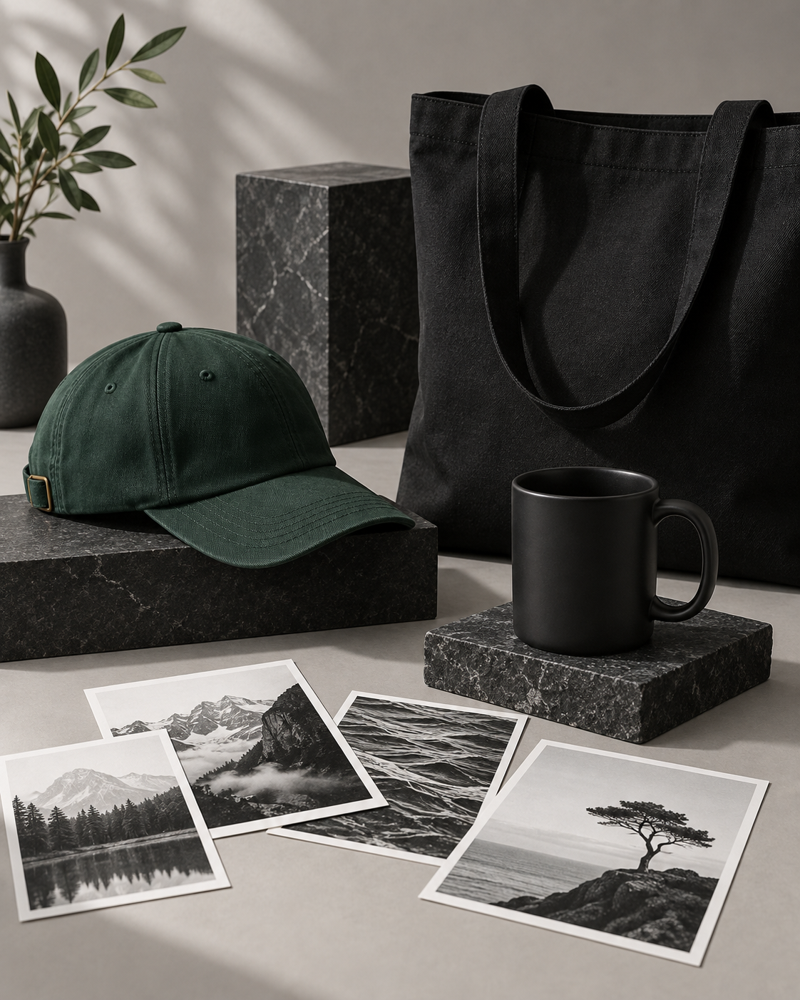

Apparel 01 / new
House Mark T-shirt
220–280 gsm organic cotton
CHF 65 target ↗Capsule 01 / arrivals
Heavyweight pieces, considered materials and an original visual language. Each object belongs to the same house.
Shop all pieces ↓Shop all / capsule 01
Five core pieces for cultural lives. Dimensions, materials and retail prices will be confirmed on the product page before release.
5 pieces shown
220–280 gsm organic cotton
CHF 65 target ↗
350–400 gsm dense brushed interior
CHF 115 target ↗
Non-zip · double-layer hood
CHF 135 target ↗
Six-panel organic cotton twill
CHF 55 target ↗
Reinforced heavyweight canvas
CHF 50 target ↗
Black glaze · quiet house mark
[PRICE TO CONFIRM]
Four original images on FSC stock
[PRICE TO CONFIRM]
No filler
We use a restrained palette—black, navy, hunter green, grey and white—so the photography, fabric and construction lead.
Read the making standards ↗Questions, answered
The password-protected shop is being prepared for private testing. Public release follows approved physical samples, confirmed production routes and a final quality check.
We work with selected European production partners. The exact fulfilment location and delivery estimate are shown on each released product page before checkout.
Return terms will be published with the live collection. Made-to-order objects are assessed individually, while damaged or incorrect items are replaced or refunded through our support team.
Yes. Photography editions are separate from apparel and objects. Each image draws from one shared edition of 100 across its three unframed sizes and is supplied with a numbered certificate after release.
Domus Cultura / Paris founded / Switzerland based
Contact Domus Cultura ↗ @domuscultura ↗ Collector & product enquiries